חגים ומועדים
אלול וראש השנה, סוכות, חנוכה, ט"ו בשבט, פסח, ל"ג בעומר, יום ירושלים, שבועות, בית המקדש ועוד
112 פריטים
49 משחקים, שיעורים וספרי הודיה לחנוכה במקום אחד
כללי (3)
חגי ישראל ומועדי השנה – קטלוג חומרים
כ-3,300 חומרים לחודש אלול וסליחות, ראש השנה, צום גדליה ועשרת ימי תשובה ויום הכיפורים – מערכי שיעור, מצגות, דפי…
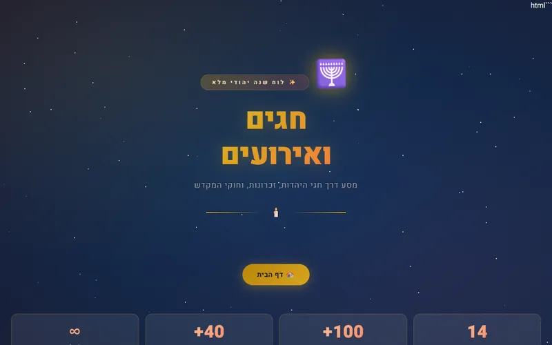
חגים ואירועים – קטלוג
```html חגים ואירועים יהודיים – מרכז לימוד וחגיגה 🕎 ✨ לוח שנה יהודי מלא חגים ואירועים מסע דרך חגי היהדות, זכרו…
שִׁיר הַבְּרָכוֹת פִּזְמוֹן מָה אֲשַׁלֵּם, מָה אֲשַׁלֵּם,
אלול וראש השנה (11)
פעילויות חודש אלול - בית הספר נעם
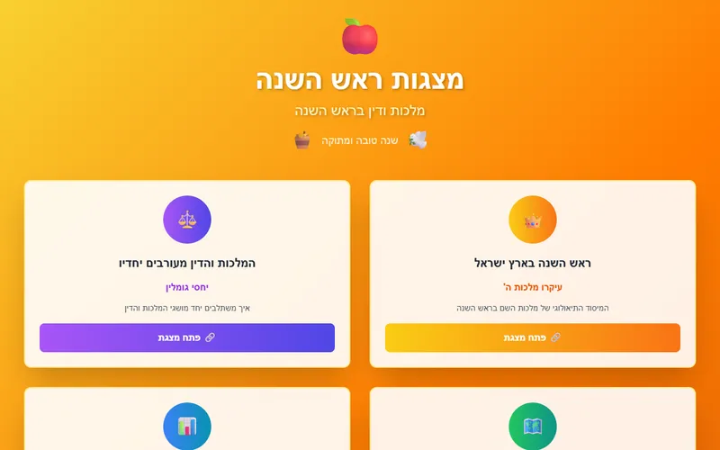
מצגות ראש השנה - מלכות ודין
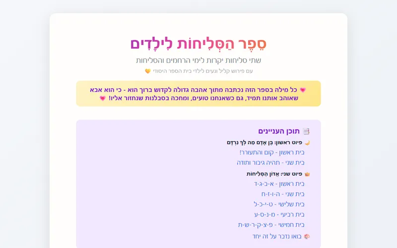
סליחות עם פירוש
קליל ונעים לילדי בית הספר היסודי 💛 💗 כל מילה בספר הזה נכתבה מתוך אהבה גדולה לקדוש ברוך הוא - כי הוא אבא שאוהב …
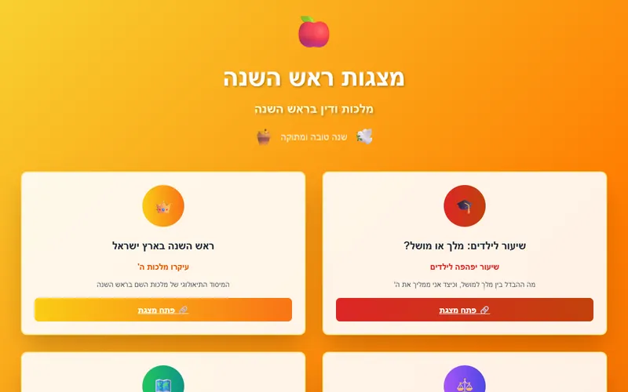
המלכת ה' - מצגות לילדים
מצגות ראש השנה - מלכות ודין 🍎 מצגות ראש השנה מלכות ודין בראש השנה 🕊️ שנה טובה ומתוקה 🍯 🎓 שיעור לילדים: מלך או …
מלך או מושל?
👑 האם הילד/ה בסיפור ממליכ/ה את ה' באהבה, או שה' אצלה כמו מושל? ניקוד: 0 / 0 👑 מלך עושה מרצון ואהבה 😐 מושל עושה…
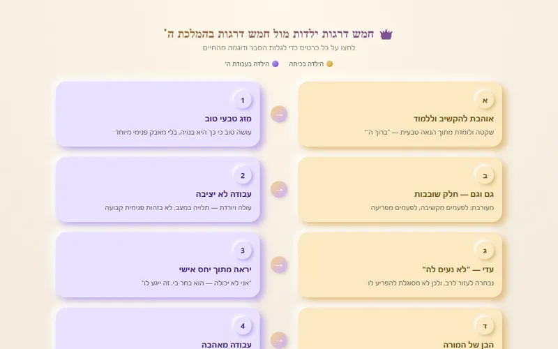
חמש דרגות ילדות מול חמש דרגות בהמלכת ה'
לחצו על כל כרטיס כדי לגלות הסבר ודוגמה מהחיים הילדה בכיתה הילדה בעבודת ה' א אוהבת להקשיב וללמוד שקטה ולומדת מת…
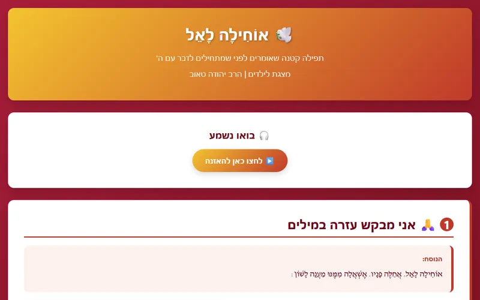
השיר - אוחילה לאל
אוֹחִילָה לָאֵל - מצגת לילדים 🕊️ אוֹחִילָה לָאֵל תפילה קטנה שאומרים לפני שמתחילים לדבר עם ה' מצגת לילדים | הרב…
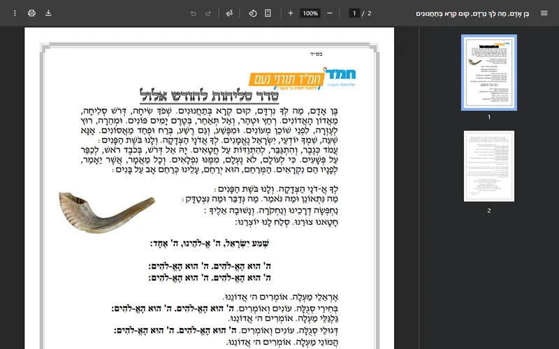
סליחות בבית הספר נעם
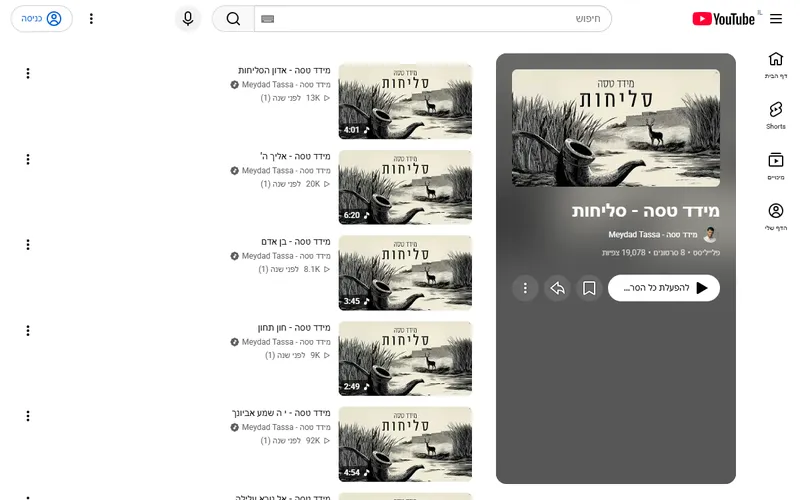
שירי סליחות
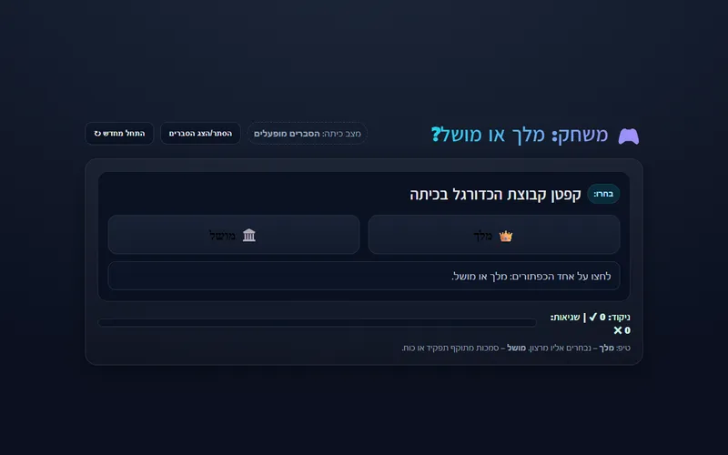
ראש השנה - מלך או מושל
משחק: מלך או מושל? 🎮 משחק: מלך או מושל? מצב כיתה: הסברים מופעלים הסתר/הצג הסברים התחל מחדש ↻ בחרו: 👑 מלך 🏛️ מו…
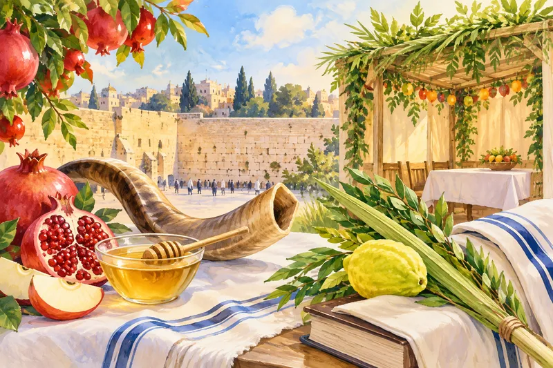
חגי תשרי
דין או מנהג — משחק חגי תשרי חגי תשרי דין או מנהג — משחק מחשב שאלה 1 / 29 ניקוד: 0 ... דִּין מִנְהָג כל הכבוד! …
סוכות ושמחת תורה (9)
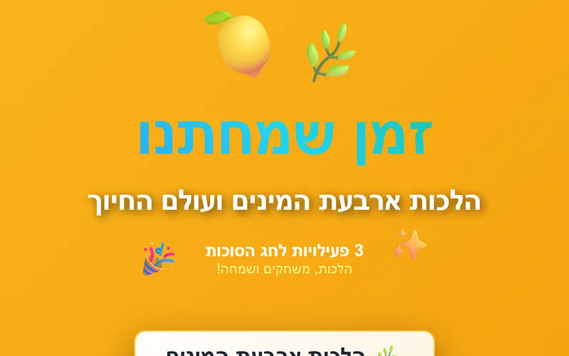
הלכות ארבעת המינים ועולם החיוך✨3 פעילויות לחג הסוכותהלכות, משחקים ושמחה!
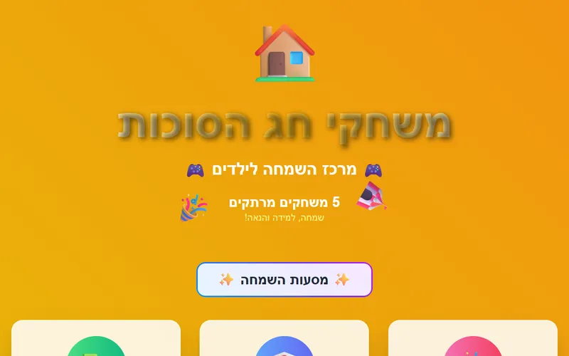
משחקי חג הסוכות -
מצגות סוכות וארבעת המינים
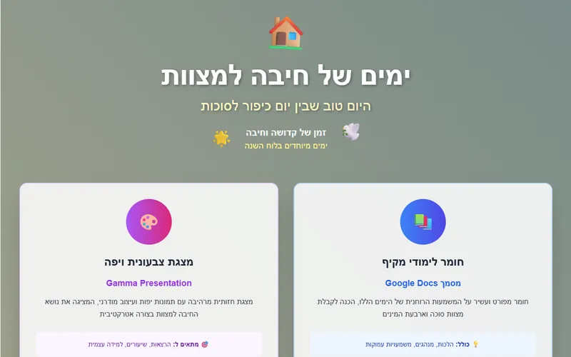
ימים של חיבה למצוות - יום טוב שבין יום כיפור לסוכות
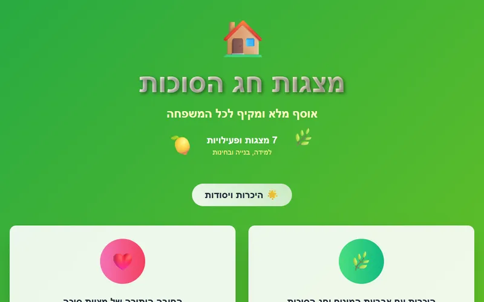
מצגות חג הסוכותאוסף מלא ומקיף לכל המשפחה
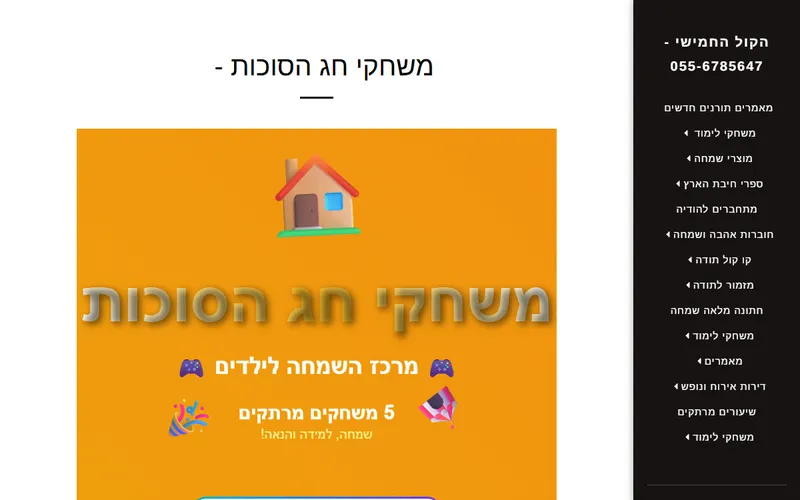
משחקי חג הסוגות
משחקי חג הסוכות - - הקול החמישי - 055-6785647 הקול החמישי - 055-6785647 מאמרים תורנים חדשים משחקי לימוד תכנית …
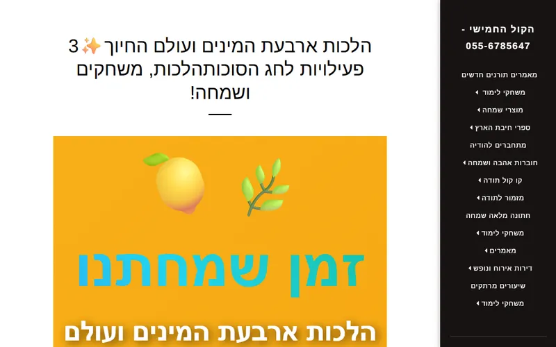
הלכות ארבעת המינים ועולם החיוך
✨3 פעילויות לחג הסוכותהלכות, משחקים ושמחה! - הקול החמישי - 055-6785647 הקול החמישי - 055-6785647 מאמרים תורנים…
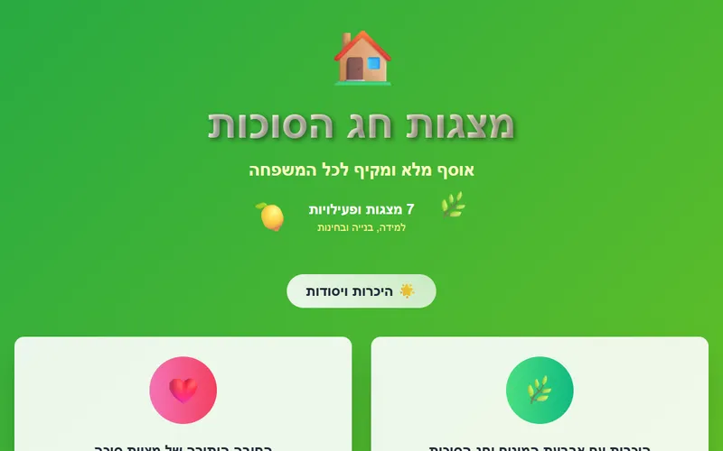
חג סוכות
מצגות חג הסוכות - אוסף מלא 🏠 מצגות חג הסוכות אוסף מלא ומקיף לכל המשפחה 🌿 7 מצגות ופעילויות למידה, בנייה ובחינו…
שמחת תורה - השמחה שלא נגמרת
קישור למשחק עם חומר לימודי קישור למשחק נוסף יש לקרוא לפני כן את השיעור על שמחת תורה שמחת תורה - השמחה שלא נג…
ט"ו בשבט (11)
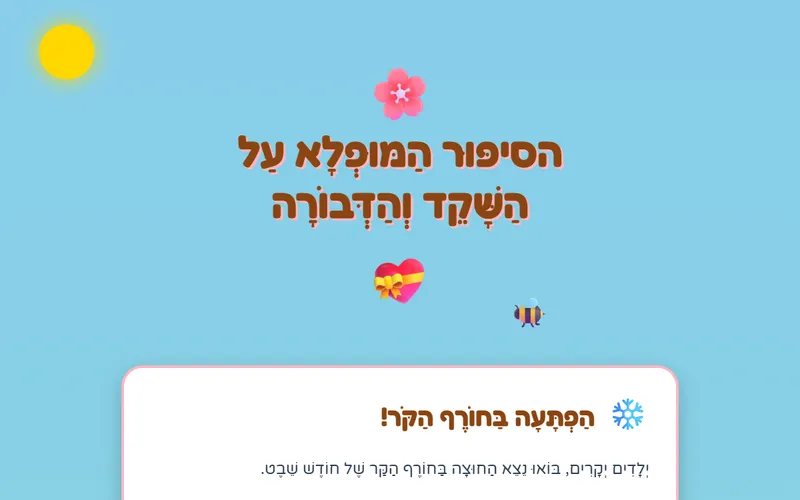
השקד והדבורה - עם מוסר השכל
🌸 הסיפּוּּר הַמּוּפְלָא עַל הַשָּׁקֵד וְהַדְּבוֹרָה 🐝 🐝 🌸 הסיפּוּּר הַמּוּפְלָא עַל הַשָּׁקֵד וְהַדְּבוֹרָה 💝 …
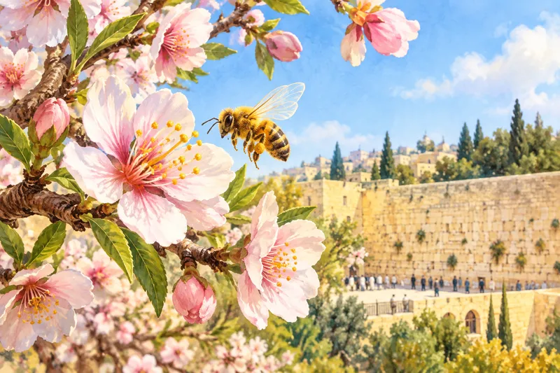
השקד והדבורה - שיר
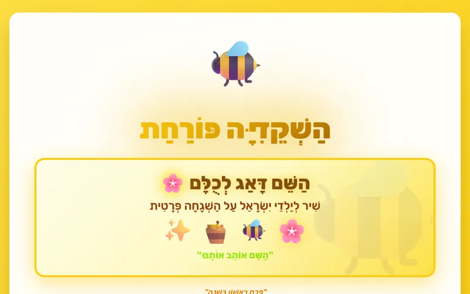
השקד והדבורה - מילים לשיר
🌸 הַשְׁקֵדִיָּה פּוֹרַחַת – הַשֵּׁם דָּאַג לְכֻלָּם 🐝 🐝 הַשְׁקֵדִיָּה פּוֹרַחַת הַשֵּׁם דָּאַג לְכֻלָּם 🌸 שִׁי…
שיר השקדיה עם אהבת השם
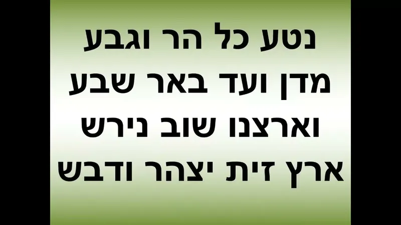
שיר השקדיה בקול של גבר
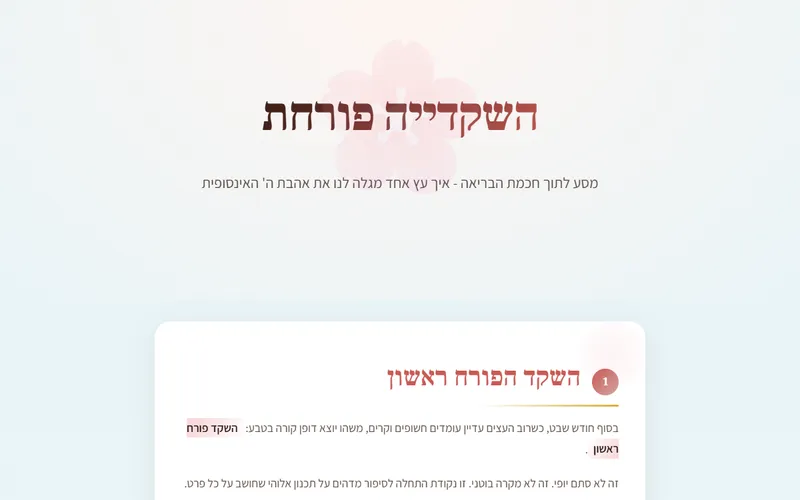
השקדיה - פורחת - למה דווקא השקדיה
השקדייה פורחת - חכמת הבריאה באהבה השקדייה פורחת מסע לתוך חכמת הבריאה - איך עץ אחד מגלה לנו את אהבת ה' האינסופי…
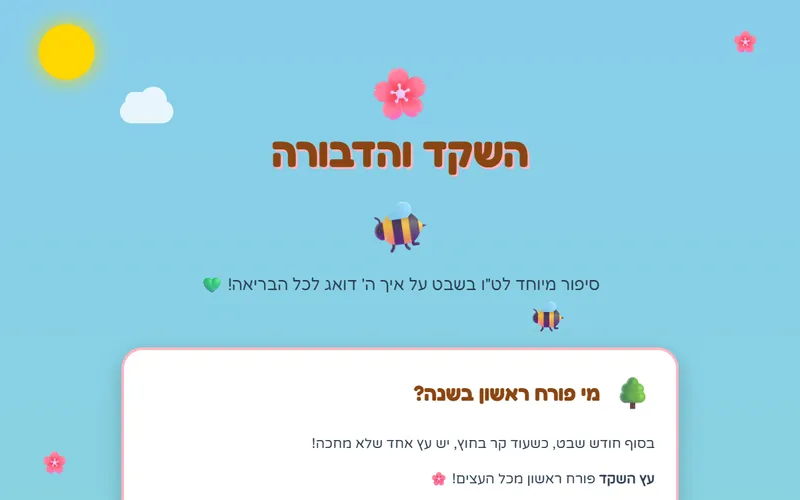
השקדיה פורחת - לילדים
🌸 השקד והדבורה - סיפור של ט"ו בשבט 🐝 🐝 🌸 🌸 🌸 השקד והדבורה 🐝 סיפור מיוחד לט"ו בשבט על איך ה' דואג לכל הבריאה! 💚…
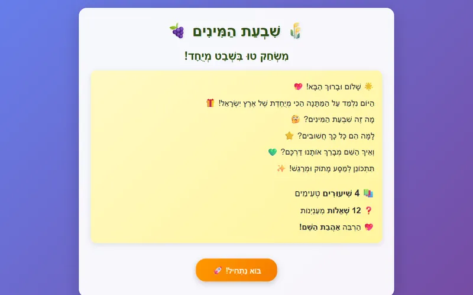
שִׁבְעַת הַמִּינִים טוּ בִּשְׁבָט
בָט
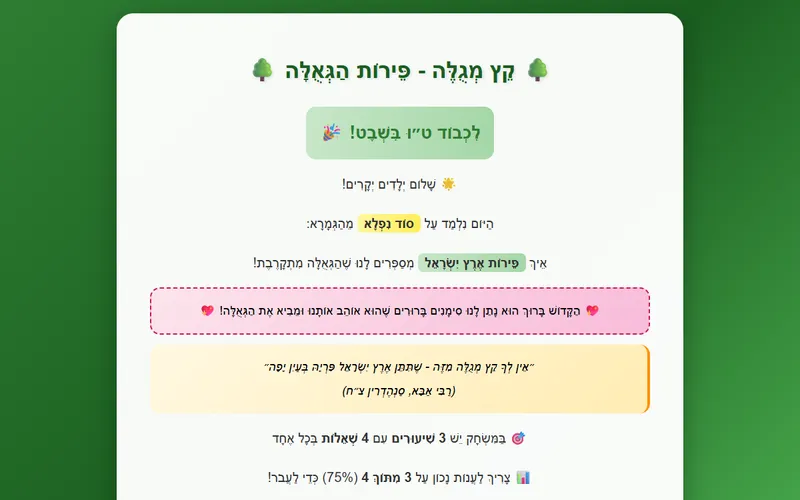
קֵץ מְגֻלֶּה - פֵּירוֹת הַגְּאֻלָּה
🌳💖
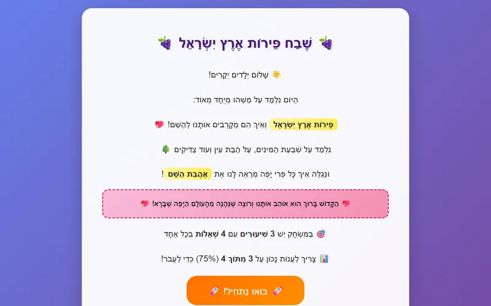
שֶׁבַח פֵּירוֹת אֶרֶץ יִשְׂרָאֵל
🍇💖
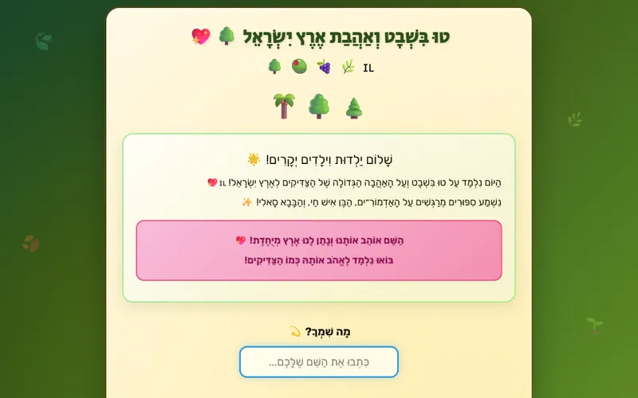
טוּ בִּשְׁבָט וְאַהֲבַת אֶרֶץ יִשְׂרָאֵל
🌳💖 🍃 🌿 🍂 🌱
פורים (1)
פסח וספירת העומר (2)
יום השואה (6)
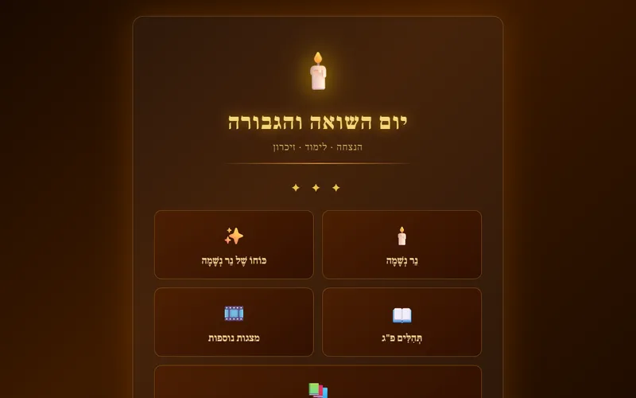
יום השואה - מצגות ופעילות
יום השואה והגבורה 🕯️ יום השואה והגבורה הנצחה · לימוד · זיכרון ✦ ✦ ✦ 🕯️ נֵר נְשָׁמָה ✨ כּוֹחוֹ שֶׁל נֵר נְשָׁמָ…
תהלים פג
יום השואה – מצגות נוספות
נר נשמה
הלכות, מנהגים ומקורות נֵר נְשָׁמָה הלכות · מנהגים · מקורות נֵר ה' נִשְׁמַת אָדָם משלי כ, כז עשרה פרקים מסודרים…
מַדְרִיךְ חִינוּכִי לְמוֹרִים וְרַבָּנִים
כוחו של נר נשמה
ל"ג בעומר (14)
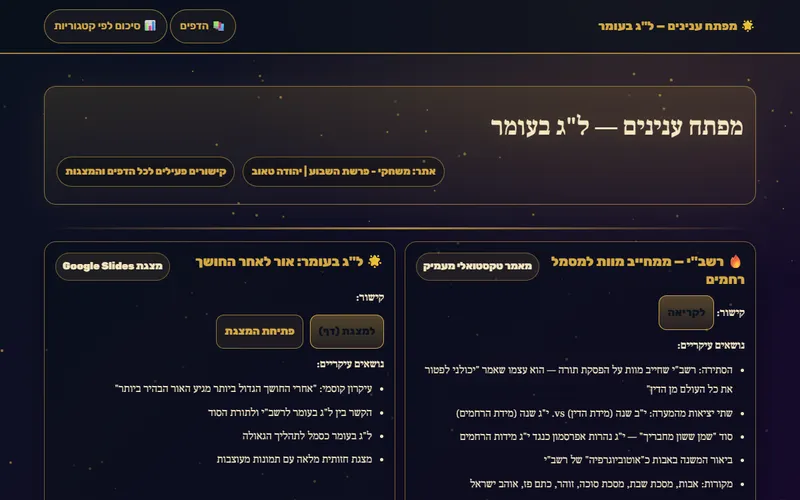
מפתח מאמרי לג בעומר
מפתח ענינים — ל"ג בעומר | יהודה טאוב 🌟 מפתח ענינים — ל"ג בעומר 📚 הדפים 📊 סיכום לפי קטגוריות מפתח ענינים — ל"ג …
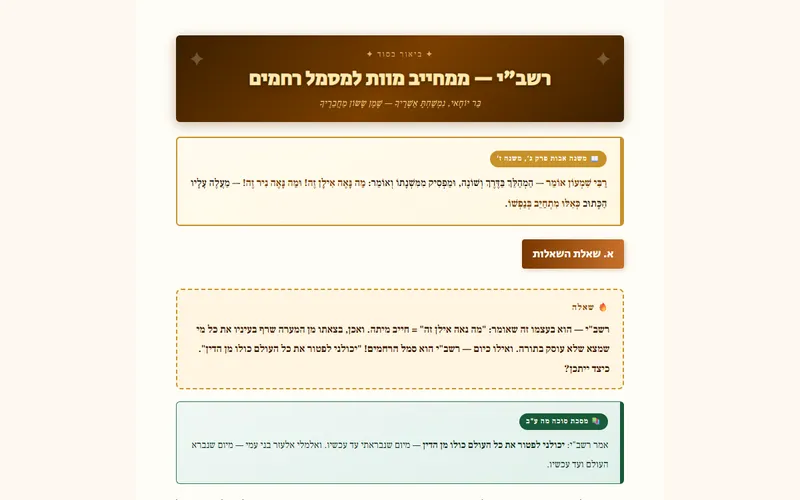
רשב"י — ממחייב מוות למסמל רחמים
בַּר יוֹחָאי, נִמְשַׁחְתָּ אַשְׁרֶיךָ — שֶׁמֶן שָׂשׂוֹן מֵחֲבֵרֶיךָ 📖 משנה אבות פרק ג', משנה ז' רַבִּי שִׁמְעו…
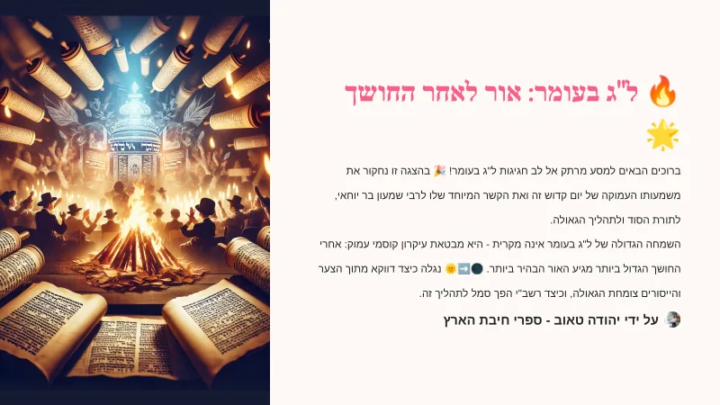
האור שלאחר החושך
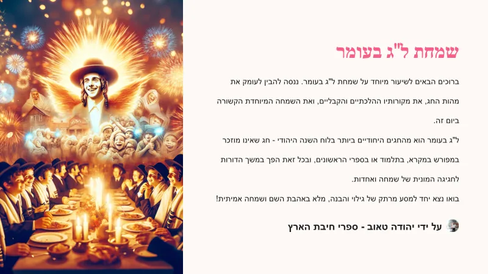
שמחת ל"ג בעומר - על שום מה
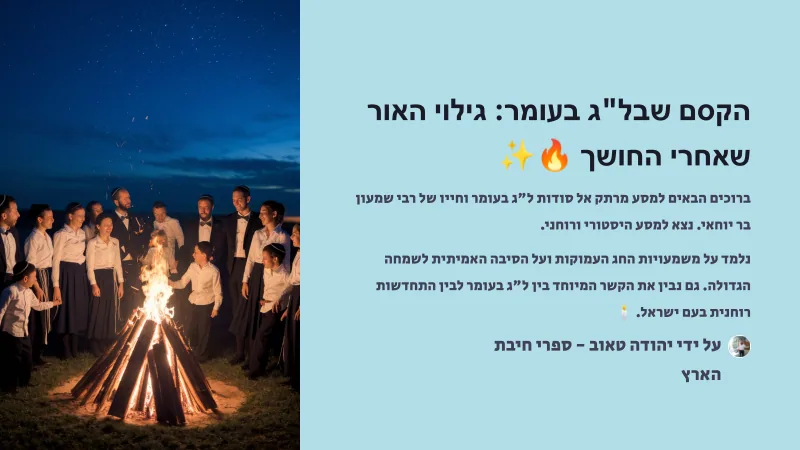
הקסם שבל"ג בעומר: גילוי האור שאחרי החושך
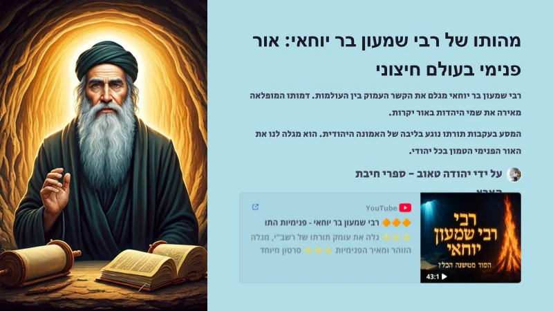
מהותו של רבי שמעון בר יוחאי: אור פנימי בעולם חיצוני
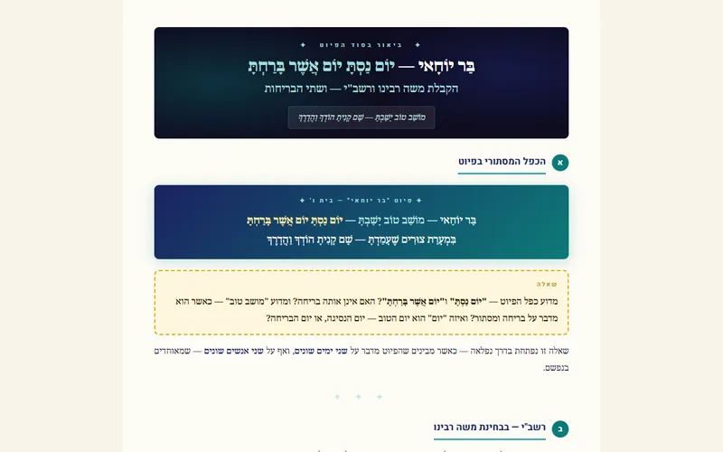
בַּר יוֹחָאי — יוֹם נַסְתָּ יוֹם אֲשֶׁר בָּרַחְתָּ
הקבלת משה רבינו ורשב"י — ושתי הבריחות מוֹשַׁב טוֹב יָשַׁבְתָּ — שָׁם קָנִיתָ הוֹדְךָ וַהֲדָרֶךָ א הכפל המסתורי…
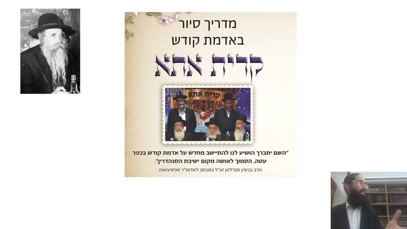
טיול בעקבות רשב"י - בקרית אתא
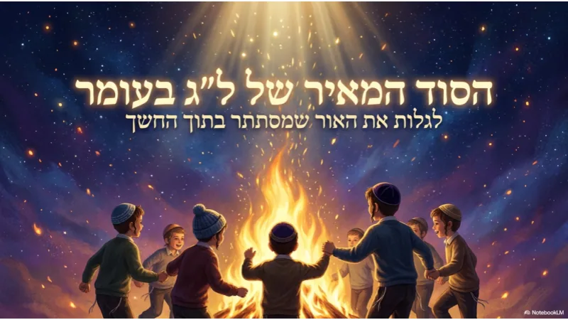
הסוד המאיר של לג בעומר
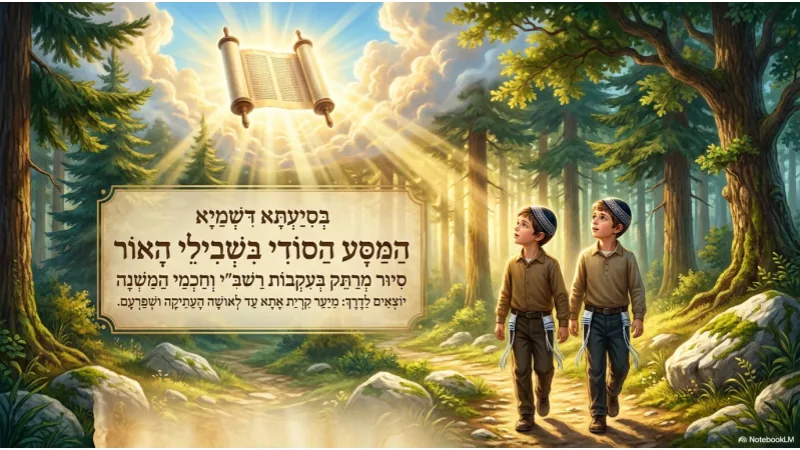
סיור מרתק בעקבות רשבי - בכפר עטה - קרית אתא
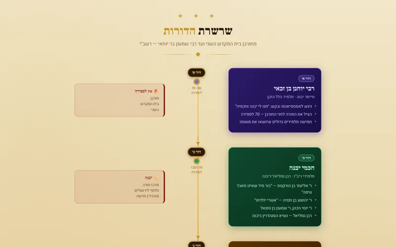
שרשרת הדורות לרשב"י
שרשרת הדורות — מחורבן המקדש עד רשב"י ✦ ✦ ✦ שרשרת הדורות מחורבן בית המקדש השני ועד רבי שמעון בר יוחאי — רשב"י ד…
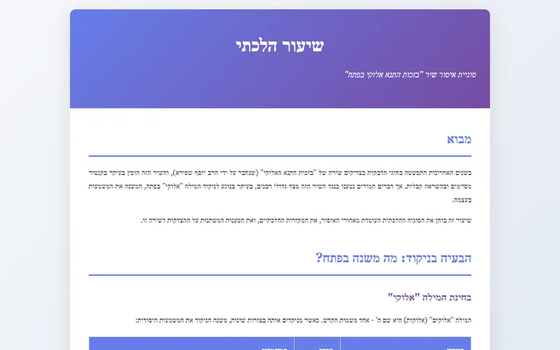
השיר החמור - לכבוד התנא האלוקאי
שיעור - איסור שיר "בזכות התנא אלוקי" שיעור הלכתי סוגיית איסור שיר "בזכות התנא אלוקי בפתח" מבוא בשנים האחרונות …
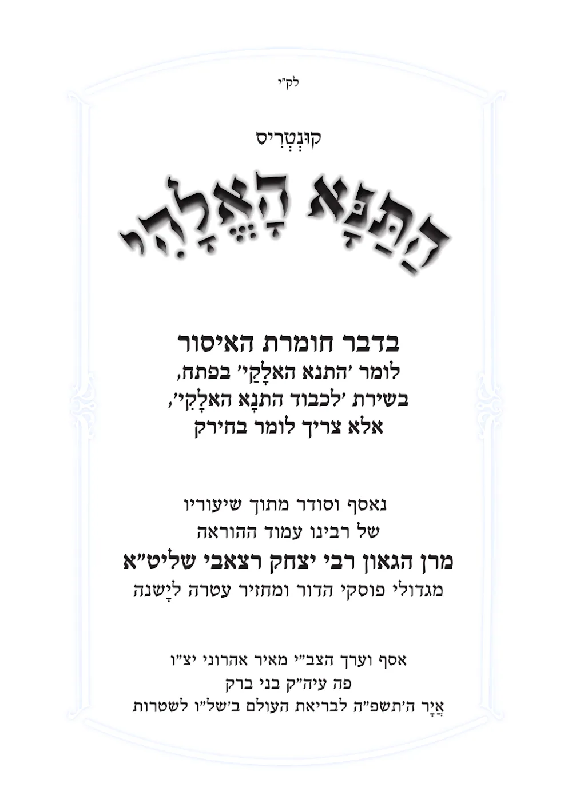
מאמר חמור על השיר הנורא
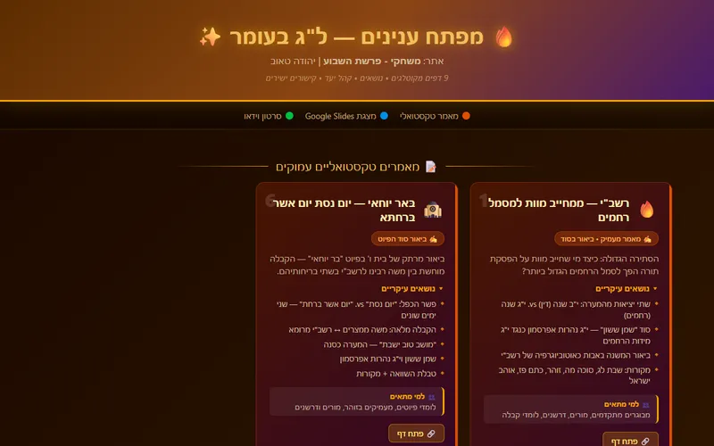
מפתח עניני לג בעומר
מפתח ענינים — ל"ג בעומר 🔥 מפתח ענינים — ל"ג בעומר ✨ אתר: משחקי - פרשת השבוע | יהודה טאוב 9 דפים מקוטלגים • נוש…
יום ירושלים (9)
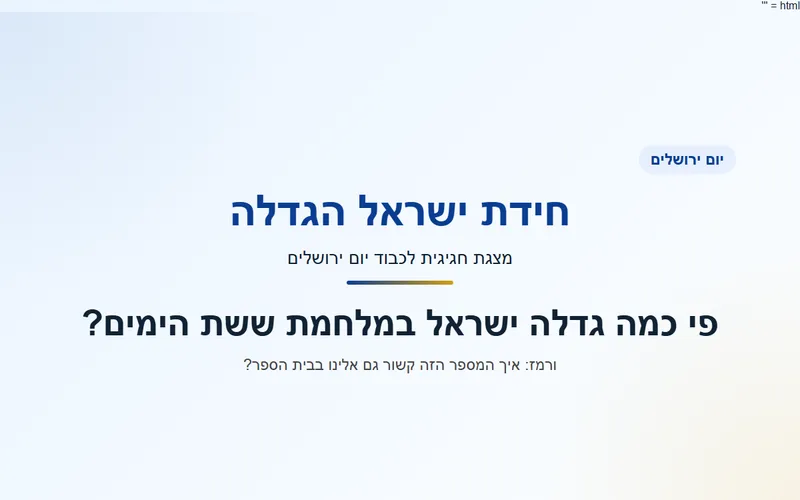
פי כמה גדולה ישראל
html = ''' יום ירושלים - חידת פי 4.4 יום ירושלים חידת ישראל הגדלה מצגת חגיגית לכבוד יום ירושלים פי כמה גדלה יש…
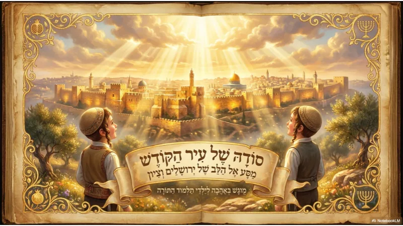
ההבדל בין ציון לירושלים
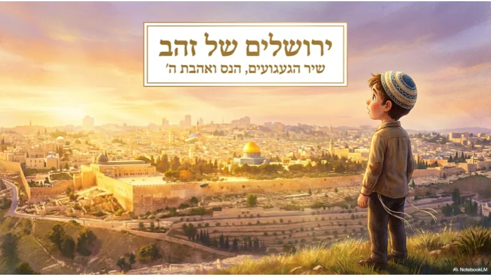
מצגת על השיר ירושלים של זהב
כל שירי ירושלים - באחד

אוסף מצגות על שירי ירושלים
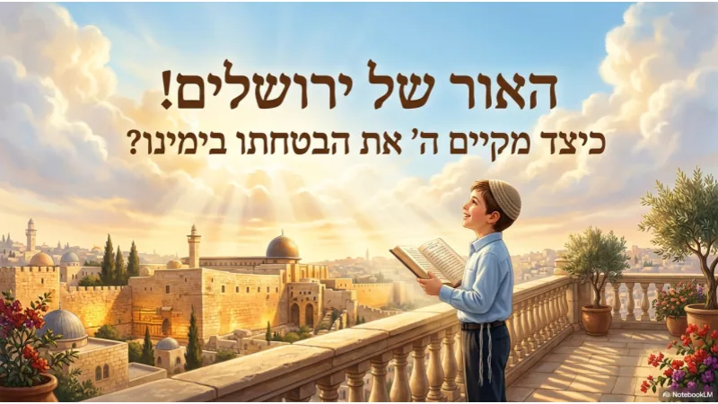
כי מציון תצא תורה
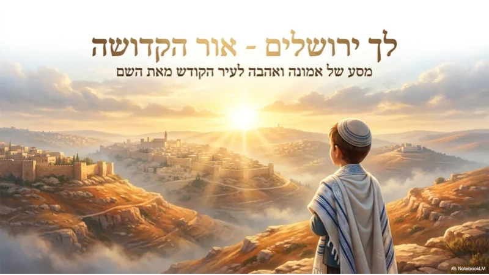
לך ירושלים - רז וסוד
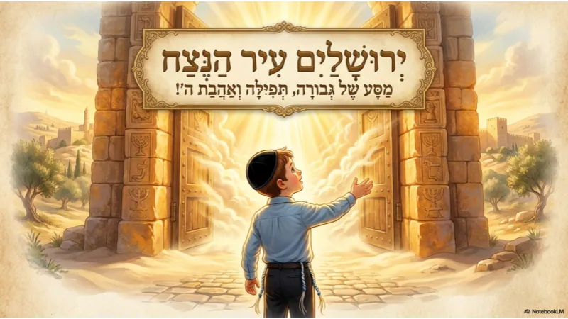
ירושלים - עבר הווה עתיד
מצגות על שירי ירושלים
שבועות (3)
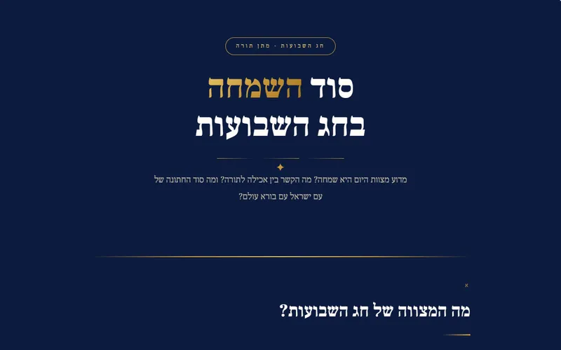
השמחה של חג השבועות
סוד השמחה בחג השבועות חג השבועות · מתן תורה סוד השמחה בחג השבועות ✦ מדוע מצוות היום היא שמחה? מה הקשר בין אכיל…
דבש וחלב תחת לשונך
דלג לתוכן ליל שבועות שיעור חגיגי ב־HTML, מוכן ללימוד, הקרנה והדפסה ✦ חג מתן תורה · שיעור ללילה הגדול דבש וחלב …
מטרת לימוד התורה
🕯️ חקירה א׳ האם לימוד תורה מביא לאהבת ה׳ מעצמו — או רק בתנאי שהאדם מכוון לכך? סיבה או סימן נקודת החקירה המרכזי…
בית המקדש ובין המצרים (11)
לקראת ראש חודש אב אוהב שלום ורודף שלום מידתו של אהרן הכהן — יום פטירתו, ומ
ה הוא מלמד אותנו על השלום 🌸 שאלה לפתיחה מי הוא האדם היחיד בכל התורה שכתוב בה היום המדויק שבו הוא נפטר? 🕊️ יום …
הפרדוקס של תשעה באב - הרב פיבלזון
פרק 1 - הפרדוקס של תשעה באב מאחורי הפרגוד: המהפכה התודעתית של היהדות הנאמנה — חלק א', פרק 1 הפרדוקס של תשעה בא…
חינוך לנושא בית המקדש • ראיון עם הרב מנחם בורשטין
ראיון עם הרב מנחם בורשטין - חינוך לנושא בית המקדש ראיון עם הרב מנחם בורשטין חינוך לנושא בית המקדש בעידן המודרנ…
שבוע בית המקדש - ארגז כלים
שבוע בית המקדש — ארגז כלים שבוע בית המקדש תוכנית יומית חוברות תכנים יצירה רעיונות ☾ ארגז כלים מסודר • שבוע בית…
איך מתכוננים למקדש כבר היום
כיצד נתכונן למקדש - למעשה
השיר - יושב ומחכה לו
🕯️ הנגר, הסנדלר והבנאי 🕯️ 🕯️ 🕯️ 🕯️ 🕯️ 🕯️ הקדמה הנגר הסנדלר הבנאי משמעות 📖 שיר קלאסי של חנוך בר 🕯️✨🪑👞🏢✨🕯️ הנגר,…
יושב ומחכה לו - שיר עם קישור
הנגר, הסנדלר והבנאי | שיר לילדים 🏠 דף הבית 📖 השיר ▶ השמע את השיר 🎭 🪛 👞 🏗️ הנ֫גַר, הסנ֫דְלָר והבנ֫אִי שִׁיר יָפ…
שיר לעד חיה בלבבנו
לעד חיה בלבבנו | שיר ישראלי מרומם 🏠 דף הבית 📖 השיר שמע את השיר 🇮🇱 ❤️ 🕯️ לָעַד חַיָּה בִּלְבָבֵנוּ שִׁיר אִמּוּ…
סרטון הדרכה על החומרים
בין המצרים - שיעורי קול תודה
בין המצרים - כל השיעורים ימי בין המצרים הרב יהודה טאוב - לומדים לראות גאולה 9 שיעורים לימי בין המצרים ▶ הפעלת …
ראש חודש (2)
מדוע שמחים בראש חודש
שמחת ראש חודש | שיעור 🌙 שיעור יומי • ראש חודש חשוון שמחת ראש חודש על מה שמחים בראש חודש? מה המשמעות הרוחנית של…
דור הלבנה של עם ישראל
באברהם אבינו התחילה ההארה, עלתה מדור לדור עד שלמה המלך — הלבנה במילואה. ומשם ירדה בהדרגה עד צדקיהו — דור החורב…
חברון ומערת המכפלה (22)
חברון - מערת המכפלה
קניין כפול בארץ ישראל: חיבור נצחי כדוגמת מערת המכפלה
עיון בפרשת חיי שרה על משמעות רכישת קרקע וההקבלה לקניין אישה סיכום שיעור מאת הרב יהודה טאוב תוכן עניינים חידת ה…
קניין כפול: הקשר העמוק בין רכישת מערת המכפלה לקידושי אישה
עיון בפרשת חיי שרה וסוגיית "האישה נקנת" במסכת קידושין מאת: הרב יהודה טאוב 📑 תוכן העניינים מבוא: מדוע "האישה נק…
משחק חברון עיר האבות
חֶבְרוֹן - עִיר הָאָבוֹת 🕍💖
מצגת על קנית חברון
חברון - מערת המכפלה – סרטונים
סרטונים
סרטוניים
חברון - עיר האבות שיר לכבוד חברון לכבוד האבות והצדיקים של עם ישראל
חברון - עיר האבות ✨ חברון - עיר האבות ✨ שיר לכבוד חברון לכבוד האבות והצדיקים של עם ישראל ❤️ ❤️ ❤️ 🎸 הקדמה - גי…
חברון - מערת המכפלה – מצגות
מצגות
הרב, הג'יפ ועיר הרפאים
: סיפור שחרור חברון במלחמת ששת הימים 🕊️ הרב, הג'יפ ועיר הרפאים 🕊️ סיפור שחרור חברון במלחמת ששת הימים – נס בלב …
מצגת סיפורה של חברון
חידון על חברון לכיתה ג
חידון על סיפור חברון
סיפורו של בית הכנסת אברהם אבינו
בן ציון טבגר
מורשתו ופועלו של בן ציון טבגר
תוכנית לימודים שנתית מורשתו ופועלו של בן ציון טבגר תוכנית לימודים שנתית מקיפה דמות מופת של ציונות, אהבת הארץ, …
משחק מסע הנשמה
מסע הנשמה - בעקבות פרופסור טבגר 🏆 🏆 מסע הנשמה 🏆 בעקבות פרופסור בן ציון טבגר – גיבור חברון
מצגת על פועלו
הַפּרוֹפֵסוֹר שֶׁשִּׁחְרֵר אֶת חֶבְרוֹן
: סִפּוּרוֹ שֶׁל בֶּן צִיּוֹן טַבְגֶּר הַפּרוֹפֵסוֹר שֶׁשִּׁחְרֵר אֶת חֶבְרוֹן: סִפּוּרוֹ שֶׁל בֶּן צִיּוֹן טַ…
תורה תפילה ושירה
מורשת בן ציון טבגר תורה תפילה ושירה לקח מעשי מסיפור בן ציון טבגר למען ילדי ישראל - נר להאיר את הדרך 📑 תוכן הענ…
סרטון מרגש - מאבא לבן - מסירות
פרופסור בן ציון טבגר: המדען שנלחם על לִבּה של חברון
אישים וימי זיכרון (8)
רחל אמנו
ושבו בנים לגבולם - מאמר תורני ושבו בנים לגבולם שני שלבי שיבת ציון בנבואת ירמיהו ובדברי מרן הגאון ר' אלעזר שמחה…
רחל אמנו – מצגת
תפילת רחל אמנו - ושבו בנים לגבולם 🔇 💙 תפילת רחל אמנו 💙 💧 ושבו בנים לגבולם ✨ "קוֹל בְּרָמָה נִשְׁמָע נְהִי בְּכ…
רחל אמנו – משחק
רָחֵל אִמֵּנוּ - הָאֵם שֶׁאוֹהֶבֶת אוֹתָנוּ 💖
רחל אמנו – שיר
רחל אמנו – מילים לשיר
תפילת רחל אמנו מתקבלת 🙏 ✨ תפילת רחל אמנו מתקבלת ✨ "וְשָׁבוּ בָנִים לִגְבוּלָם" שיר על אהבת ה׳ ותפילה 🎵 פזמון ר…
רחל אמנו – סרטון
סרטון
דמותו ומסירותו לתורה ולמצוות
דמותו של הרב גבריאל דנק: מסירות נפש לתורה וגבורת רוח דְּמוּתוֹ שֶׁל אָב: מְסִירוּת נֶפֶשׁ לַתּוֹרָה וּגְבוּרַת…
מוסרת של אמונה ומסירות נפש
הרב גבריאל מרדכי דנק ז"ל - מורשת של אמונה, תורה והתמדה הרב גבריאל מרדכי דנק ז"ל מורשת של אמונה, תורה והתמדה תנ…